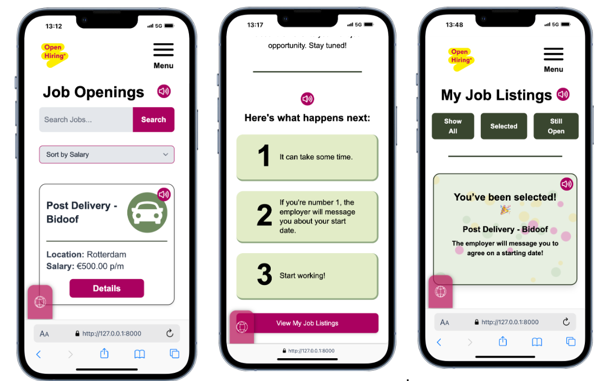

Project
OpenHiring
Een toegankelijk platform dat werkzoekenden en werkgevers helpt binnen het Open Hiring proces.

Over dit project
OpenHiring is een schoolproject waarbij wij een toegankelijk en functioneel platform hebben ontwikkeld voor werkzoekenden en werkgevers. Het doel was om het Open Hiring proces duidelijker en gebruiksvriendelijker te maken. Werkzoekenden konden vacatures bekijken, zich inschrijven voor een wachtlijst en hun voortgang volgen. Werkgevers kregen meer overzicht over vacatures, kandidaten en het selectieproces. Tijdens het project lag er veel focus op toegankelijkheid, gebruiksvriendelijkheid en het verwerken van feedback van opdrachtgever IO Digital.
Mijn rol
Dit project heb ik samen met mijn team gemaakt. Ik heb gewerkt aan de vacature detailpagina, het stappenplan na het inschrijven voor een vacature, de hoofdpagina en de pagina over Open Hiring. Daarnaast heb ik meegedacht over de structuur, toegankelijkheid en presentatie van het project. Door samen te werken in sprints en feedback van IO Digital te verwerken, hebben we het platform steeds verder verbeterd.
Wat heb ik geleerd?
Tijdens dit project heb ik geleerd hoe belangrijk planning, communicatie en samenwerking zijn binnen een teamproject. We werkten met sprints, Trello en GitHub Projects om taken te verdelen en voortgang bij te houden. Ook heb ik meer geleerd over toegankelijk ontwerpen, zoals rekening houden met contrast, vertaling, tekstgrootte en ondersteuning voor mensen die slecht kunnen zien. Een uitdaging was het mergen van code en het oplossen van bugs vlak voor de oplevering. Hierdoor heb ik geleerd dat het belangrijk is om eerder te testen en genoeg tijd vrij te maken voor foutoplossing.